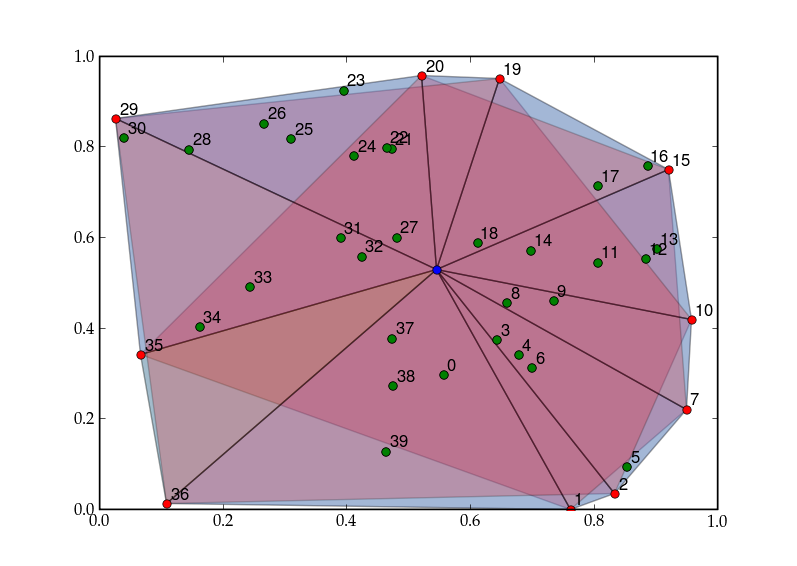

TableOfContents
This code finds the subsets of points describing the convex hull around a set of 2-D data points. The code optionally uses pylab to animate its progress.
import numpy as n, pylab as p, time
def _angle_to_point(point, centre):
'''calculate angle in 2-D between points and x axis'''
delta = point - centre
res = n.arctan(delta[1] / delta[0])
if delta[0] < 0:
res += n.pi
return res
def _draw_triangle(p1, p2, p3, **kwargs):
tmp = n.vstack((p1,p2,p3))
x,y = [x[0] for x in zip(tmp.transpose())]
p.fill(x,y, **kwargs)
#time.sleep(0.2)
def area_of_triangle(p1, p2, p3):
'''calculate area of any triangle given co-ordinates of the corners'''
return n.linalg.norm(n.cross((p2 - p1), (p3 - p1)))/2.
def convex_hull(points, graphic=True, smidgen=0.0075):
'''Calculate subset of points that make a convex hull around points
Recursively eliminates points that lie inside two neighbouring points until only
convex hull is remaining.
:Parameters:
points : ndarray (2 x m)
array of points for which to find hull
graphic : bool
use pylab to show progress?
smidgen : float
offset for graphic number labels - useful values depend on your data ran
ge
:Returns:
hull_points : ndarray (2 x n)
convex hull surrounding points
'''
if graphic:
p.clf()
p.plot(points[0], points[1], 'ro')
n_pts = points.shape[1]
assert(n_pts > 5)
centre = points.mean(1)
if graphic: p.plot((centre[0],),(centre[1],),'bo')
angles = n.apply_along_axis(_angle_to_point, 0, points, centre)
pts_ord = points[:,angles.argsort()]
if graphic:
for i in xrange(n_pts):
p.text(pts_ord[0,i] + smidgen, pts_ord[1,i] + smidgen, \
'%d' % i)
pts = [x[0] for x in zip(pts_ord.transpose())]
prev_pts = len(pts) + 1
k = 0
while prev_pts > n_pts:
prev_pts = n_pts
n_pts = len(pts)
if graphic: p.gca().patches = []
i = -2
while i < (n_pts - 2):
Aij = area_of_triangle(centre, pts[i], pts[(i + 1) % n_pts])
Ajk = area_of_triangle(centre, pts[(i + 1) % n_pts], \
pts[(i + 2) % n_pts])
Aik = area_of_triangle(centre, pts[i], pts[(i + 2) % n_pts])
if graphic:
_draw_triangle(centre, pts[i], pts[(i + 1) % n_pts], \
facecolor='blue', alpha = 0.2)
_draw_triangle(centre, pts[(i + 1) % n_pts], \
pts[(i + 2) % n_pts], \
facecolor='green', alpha = 0.2)
_draw_triangle(centre, pts[i], pts[(i + 2) % n_pts], \
facecolor='red', alpha = 0.2)
if Aij + Ajk < Aik:
if graphic: p.plot((pts[i + 1][0],),(pts[i + 1][1],),'go')
del pts[i+1]
i += 1
n_pts = len(pts)
k += 1
return n.asarray(pts)
if __name__ == "__main__":
points = n.random.random_sample((2,40))
hull_pts = convex_hull(points)
CategoryCookbook